Fête du CVCF 2009 à Leffrinckoucke

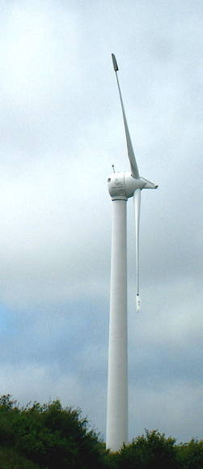
Le CVCF, né en 1977, fête gaillardement ses 32 ans ! Cette année, c'est dans le Nord, on ne peut pas plus Nord, à 2 km de la frontière belge... En chemin, minute éolienne, celle-ci me semble originale, avec ses petits bouts de pale orientables...

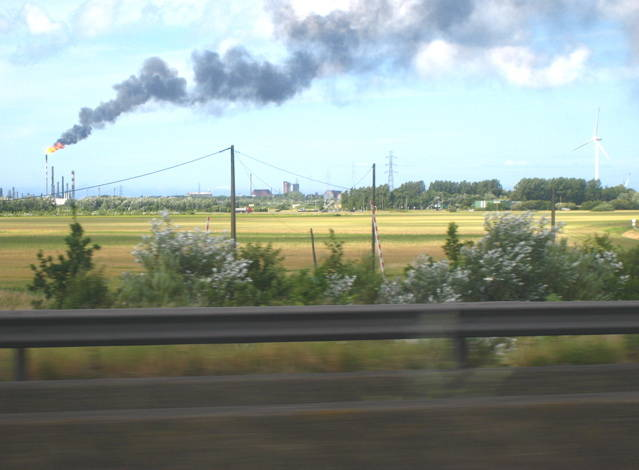
On arrive à Dunkerque, ça se voit de suite ! Je ne croyais pas que ça existait encore, mais ça fumera tout le week-end, et pas de la vapeur d'eau !

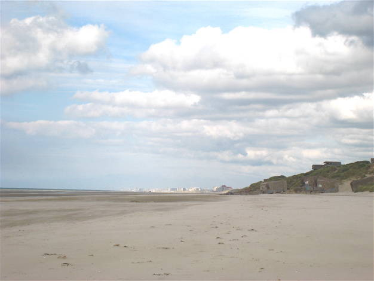
La plage de Leffrinckoucke est immense, surtout à marée basse... Au fond, La Panne est en Belgique...

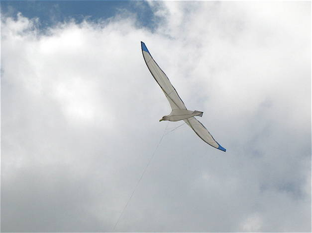
Ce vendredi, personne que moi et Michel sur son petit scooter. Et 45 km/h de vent, je teste mon Albatros 2 qui flappe bien, mais résiste...

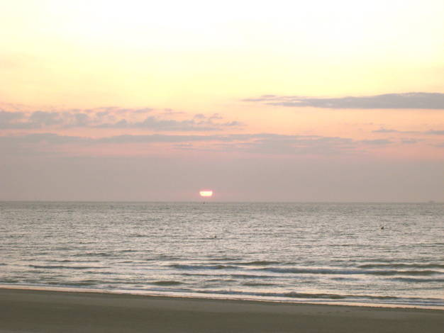
Au soir, le soleil se cache et se couche entre deux couches... de nuages... Je dormirai sur la belle promenade qui domine la plage et qui nous est réservée...

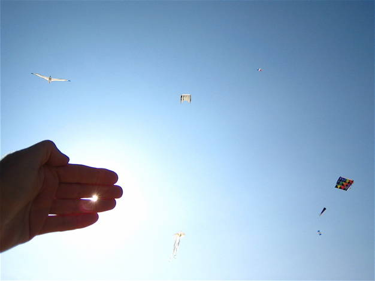
Samedi matin, grand soleil, petit vent, mais volable, et qui se renforcera. Evidemment, les cerfs-volants sont dans le soleil...

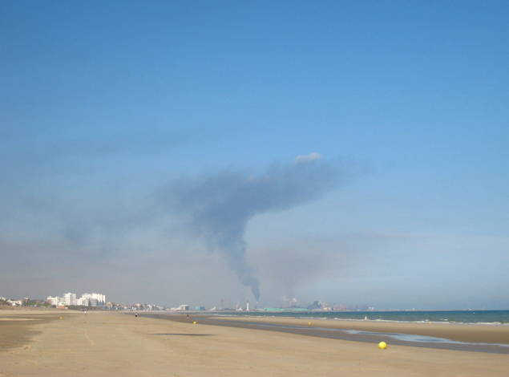
Les innommables fumées de la raffinerie et des aciéries de Dunkerque nous disent que le vent n'est pas très fort et vient vers nous !

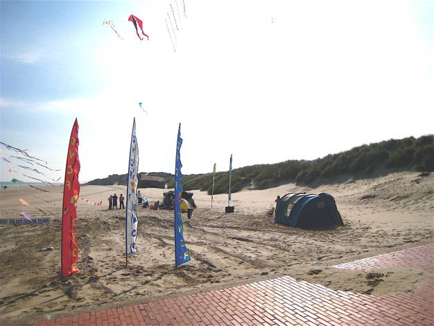
Tout le CVCF arrive progressivement, le camp monte, les bannières sont plantées et les cerfs-volants volent !

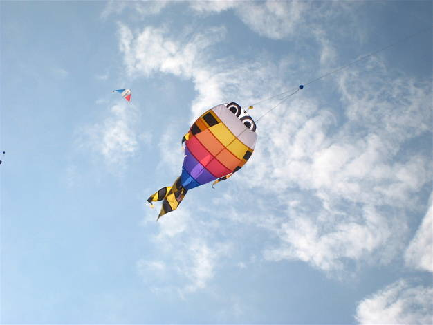
Loïk Lamalle fait voler plusieurs de ses créations, comme cet amusant poisson, qui n'a pas encore toutefois gagné son indépendance...

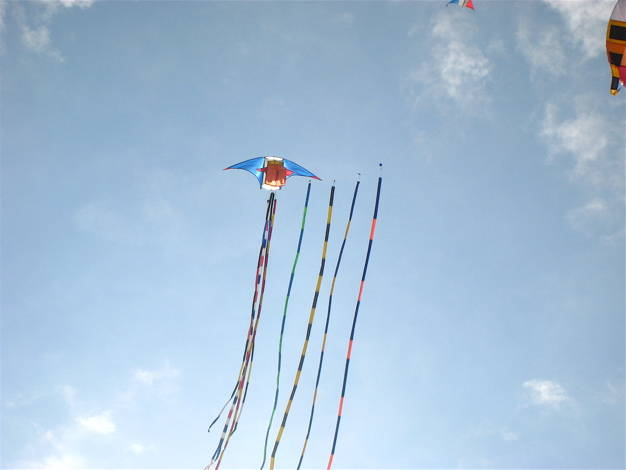
Loïk a aussi fait voler son ensemble ailé de cylindres, doté de nombreuses queues de ligne...

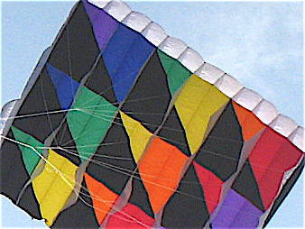
Patrick ressort aussi de ses soutes ce dérivé de flow-form très coloré !

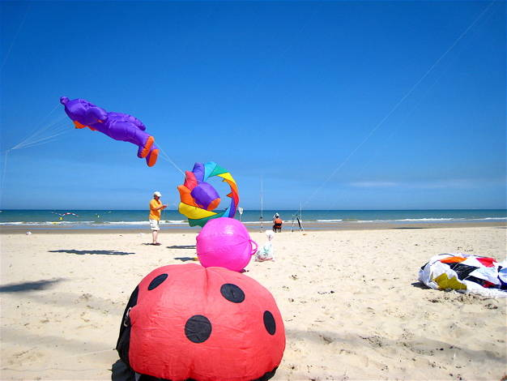
Il sort aussi son petit bol que les enfants peuvent approcher sans risque. J'ai quelquefois un peu peur de voir des enfants jouer autour de bols qui tirent la centaine de kilos !

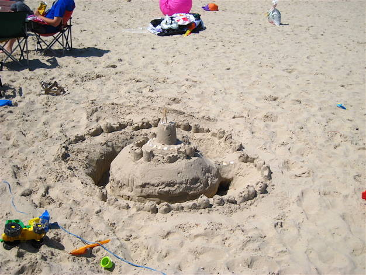
Les enfants de Jean-Daniel Chantelauze ont construit ce splendide château crénelé !

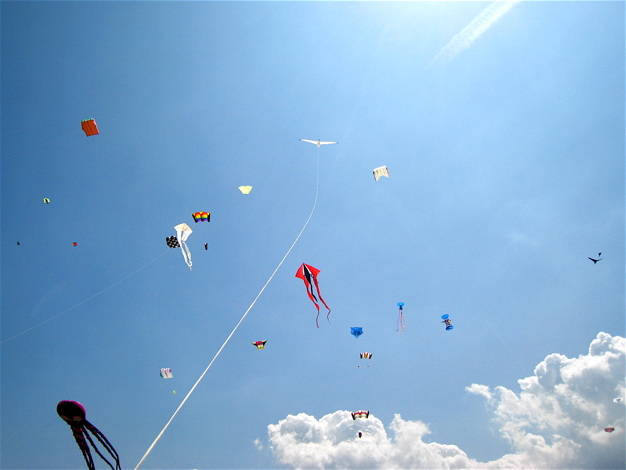
J'ai remis mon Albatros 2, pour montrer que sa fourchette de vent est étendue... Mais il commence à y avoir beaucoup de monde en l'air !

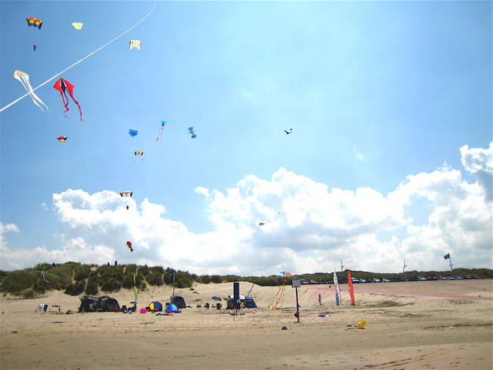
Le village de week-end commence à prendre forme, avec toutes ces tentes Quechua qui se répandent comme une traînée de poudre...

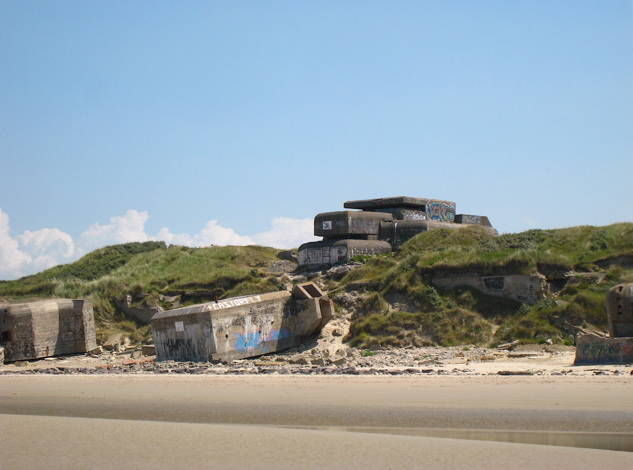
Plus loin, un entassement de blockhaus principaux et secondaires... Et derrière la dune, le dépôt de munitions qui fera la joie des nombreux photographes...

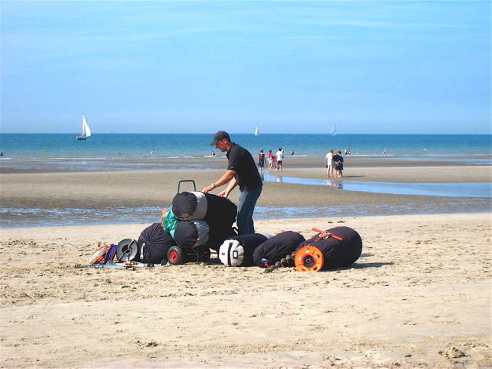
Sylvain est arrivé, et pas les mains vides, avec un wagon de sacs ! Ca sent la raie à plein nez...

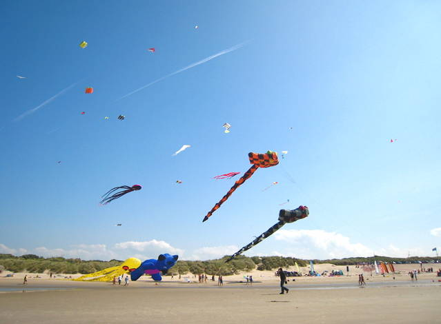
Il a monté son énorme nounours, ses raies et ses pieuvres...

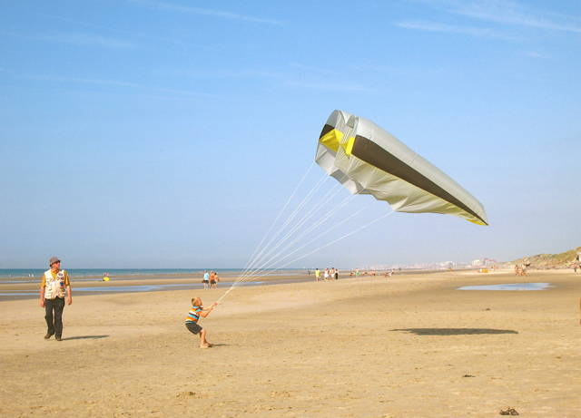
Il n'y a pas encore trop de vent, ce gamin en est la preuve !

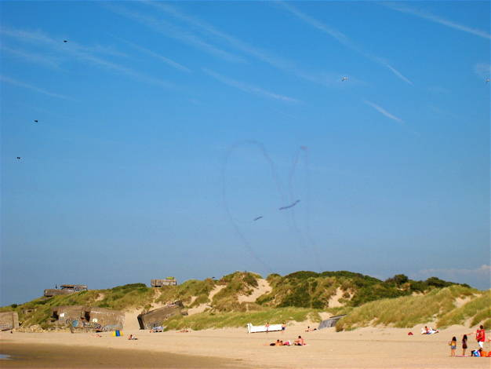
Au fond, des avions font des ronds de fumée, en préparation de la célébration de l'anniversaire de la traversée de la Manche par Blériot...

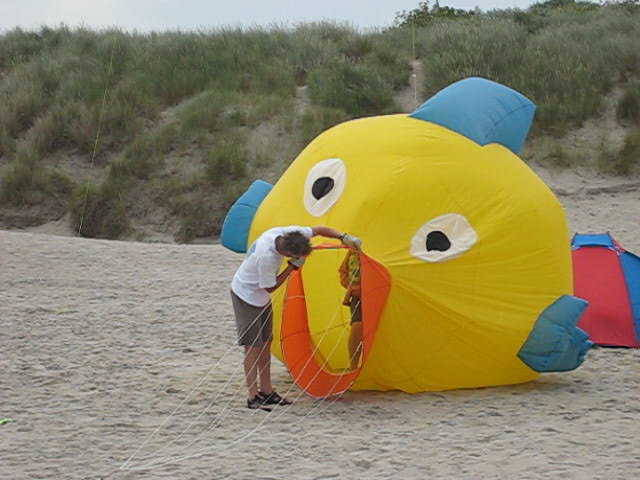
Le propriétaire fait visiter son Fugu aux petits enfants et même à leur père pour les rassurer...

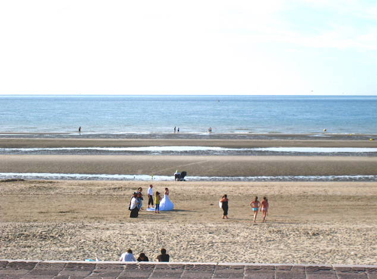
Au soir, une mariée viendra même nous visiter...

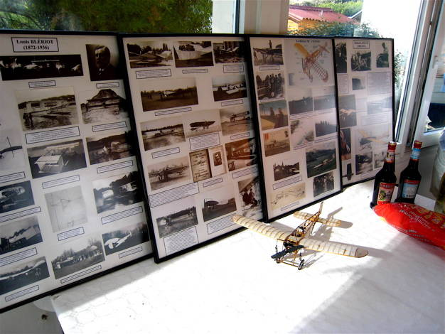
Dîner dans la salle du camping. José Wallois a étalé l'exposition préparée pour Blériot, avec une maquette de son avion et un historique complet...

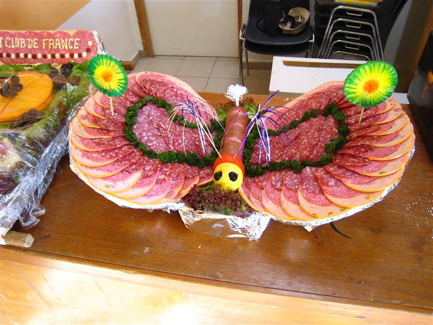
Le repas sera splendide, avec de gros efforts de présentation, comme pour ce paillon de charcuteries !

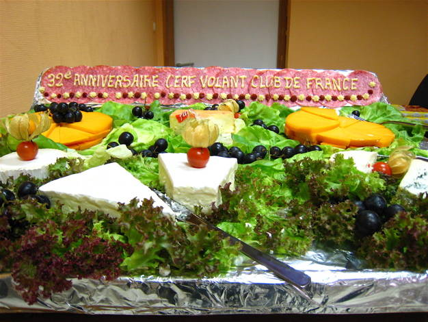
Et le plateau de fromage est encore plus somptueux, aux armes du CVCF...

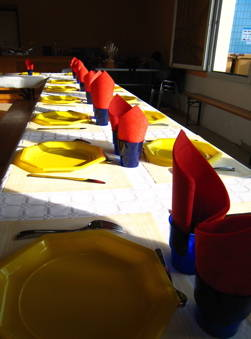
Et la table a été dressée avec goût, aux couleurs du CVCF, et avec des couverts en argent !

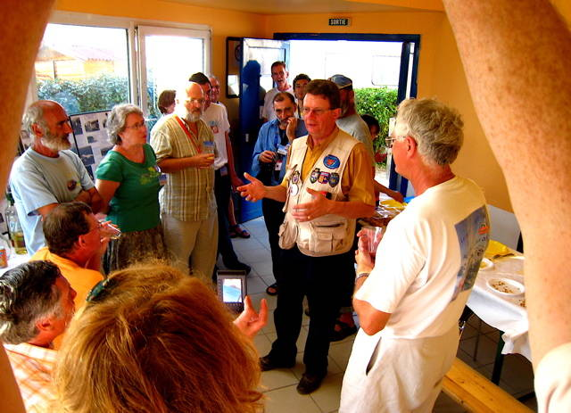
François Périault, le Président, prononce un petit discours pour dire sa joie de nous voir tous réunis, et aussi de pouvoir discuter de vive voix avec certains cervolistes qu'il connaissait peu, voire pas du tout...

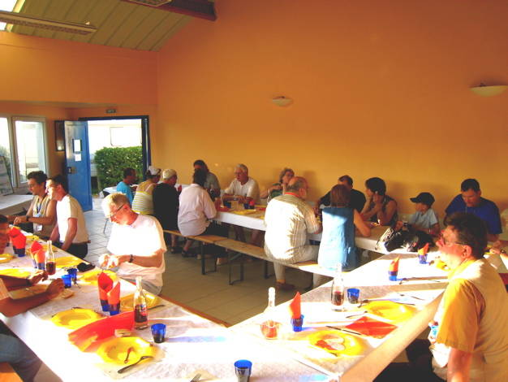
Et puis à table, dans une ambiance tranquille, avec le regret de voir plusieurs places libres ! Et un regret commun de voir que tous ces plats de qualité non consommés devront être jetés sans façons...

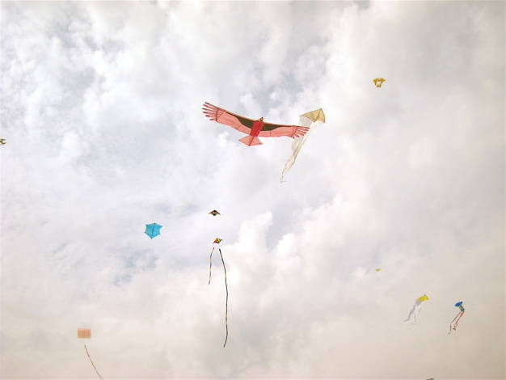
Deuxième nuit sur la promenade, mais je serai réveillé par des fêtards qui n'en finissent pas de parler. Je jette un oeil, je crois qu'il est 8 h... Tiens, 06 h 15 ! Et ça dure... Bon, je ferai une sieste après déjeuner... En attendant, le vent est bon, je sors le Condor des Andes...

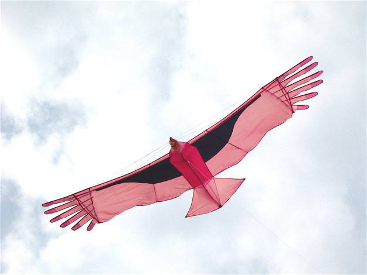
Je serai très content de son vol, même quand le vent forcera ! Une fois l'équilibre réglé, les rémiges sont sans doute très stabilisantes, comme des pompons en bout d'aile des dragons...

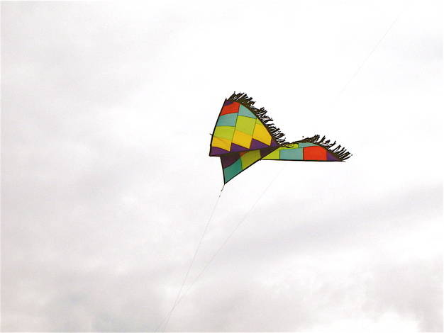
On verra beaucoup de pyrodeltas, bien sûr, mais aussi ce grand delta coloré, avec de jolies franges de bord de fuite !

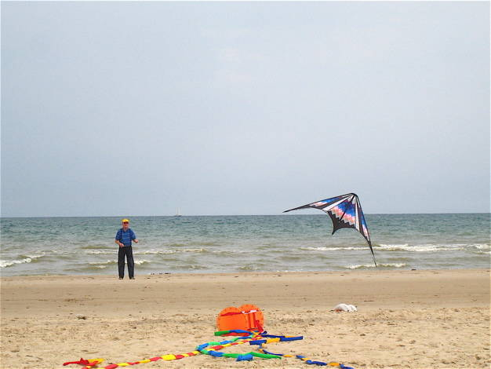
A cette fête, les non-CVCF sont aussi bienvenus, évidemment. Raoul Fosset viendra montrer son adresse avec ses beaux deux-lignes pilotables !

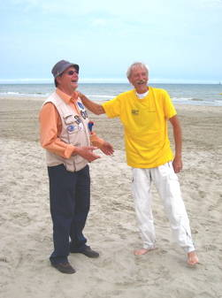
Jacques Durieu, le président du NCB a rencontré avec un grand plaisir apparent celui du CVCF... Ca fait plaisir de voir des organismes du cerf-volant qui ne se tirent pas dans les pattes réciproquement !

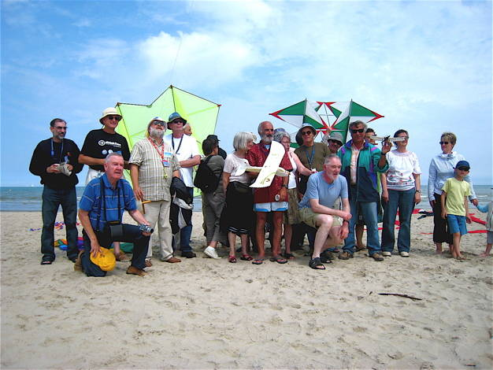
Une photo de classe réunit les cervolistes, quelques cerfs-volants et des maquettes de José !

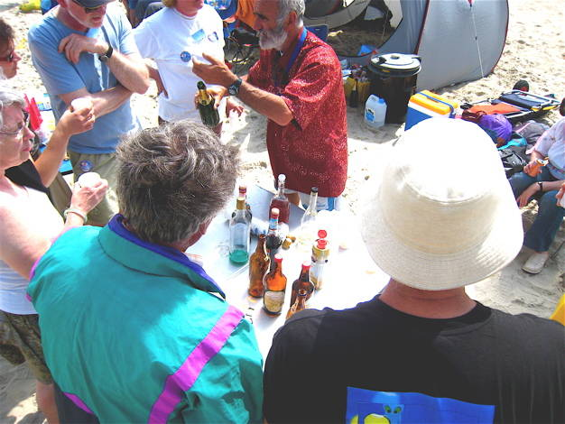
Evidemment, on ne va pas déjeuner sans un petit apéritif pour lequel Gaby a fourni une bonne part des munitions... On boit à la santé du CVCF, et du cerf-volant en général !

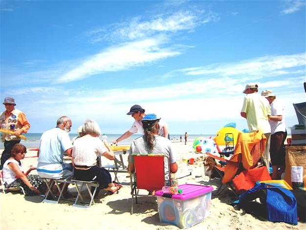
Et puis déjeuner, des plateaux bien garnis que chacun déguste où il a trouvé une place, par exemple autour de la table des L'Higuinen !

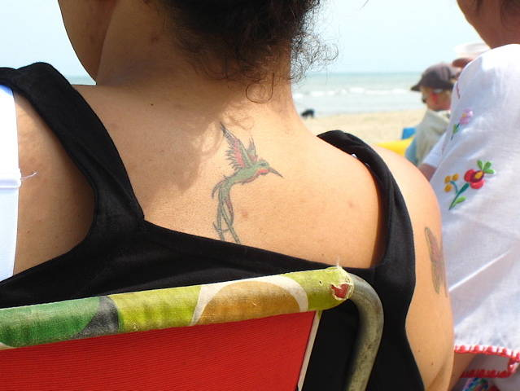
Je mange à l'ombre au bord de ma tente, certains me tournent le dos, ça n'est pas forcément désagréable, je peux admirer de jolis dessins !

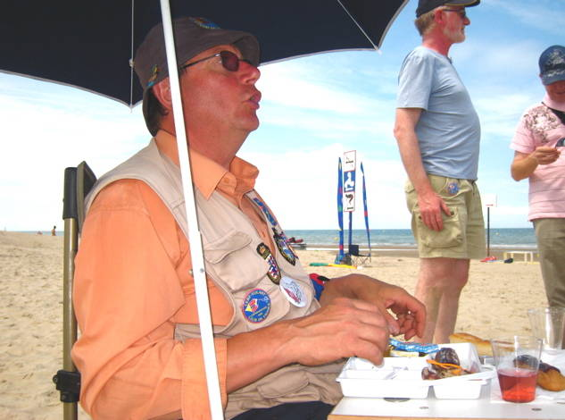
François a son siège avec parasol individuel et petite table spécialement conçue pour manger sur les genoux !

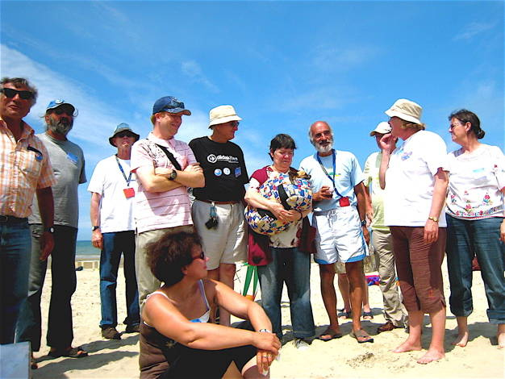
On profite de la pause pour réunir un CA extraordinaire ! Bruno Caudevielle qui avait été nommé au CA comme Délégué de la Région Nord/Pas-de-Calais sous réserve d'une rencontre personnelle a vu ainsi sa nomination officialisée...

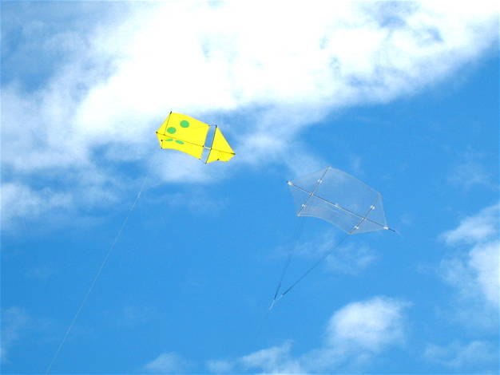
Et on revole, dans une brise qui a baissé le temps du déjeuner, mais remontera bientôt ! En attendant, des cerfs-volants légers en profitent ! L'un d'eux est vraiment évanescent...

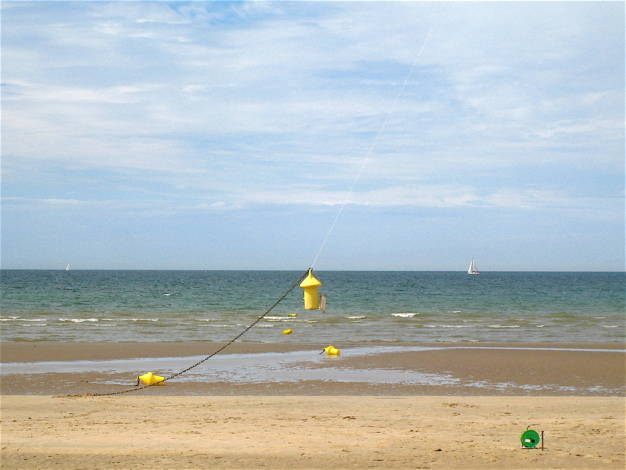
Le grand flow-form de l'Antenne de Beauce a été attaché à une bouée, et a volé dans la mer à marée haute. Maintenant, la mer a rebaissé, le vent est remonté, et le flow-form se venge en soulevant la bouée...

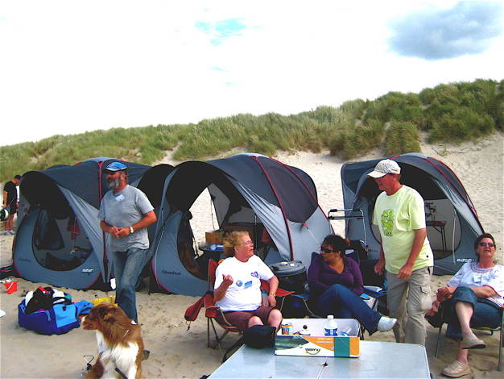
Les grandes tentes Quechua sont bien pratiques pour abriter tout ce que trimbalent les cervolistes, pas toujours seulement dans un but cervolistique, d'ailleurs...

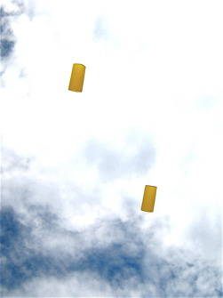
Jacques Durieu a monté ses bonshommes noirs de Magritte, et aussi ces petits circo-longs bien stables !

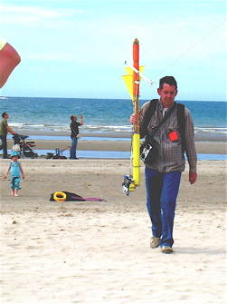
Les eolophotographes reviennent de leur expédition blockhaus, avec cerfs-volants, nacelles, appareils et impedimenta divers !

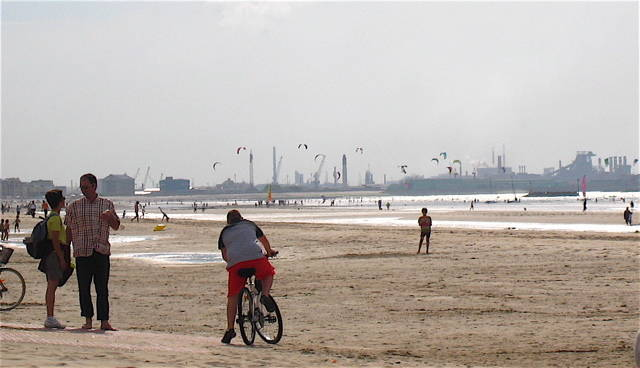
Le ciel se couvre un peu par moments, mais nous n'aurons pas une goutte d'eau. Avec le vent plus fort, les kite-surfers se multiplient dans la baie avant Dunkerque !

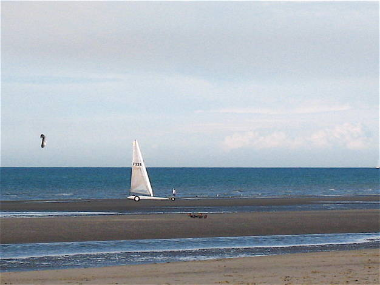
Kite-surf sur l'eau, et char à voile sur la plage. Nous n'en verrons qu'un, mais un beau, quand les baigneurs abandonneront un peu la plage...

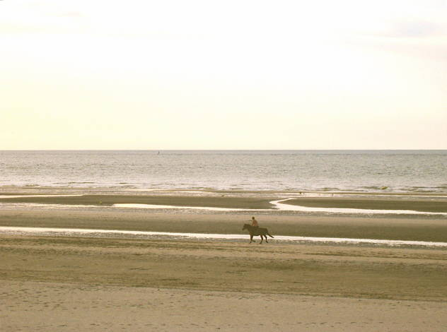
Finalement plus personne sur l'estran... Ah si, un cavalier au grand galop !

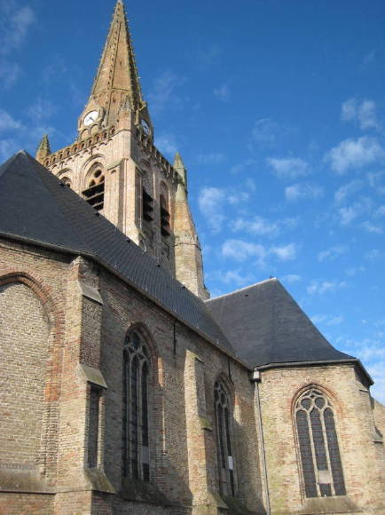
Je reste un peu sur la promenade, mais ça reste le rendez-vous des bruyants, joueurs de foot et autres... Alors je décolle pour faire un peu de route et je vais dormir au calme devant la belle église de brique de Warhem ! Warhem, vous savez, où la fête "Ces Anes" avait lieu, avec le concours des cervolistes...

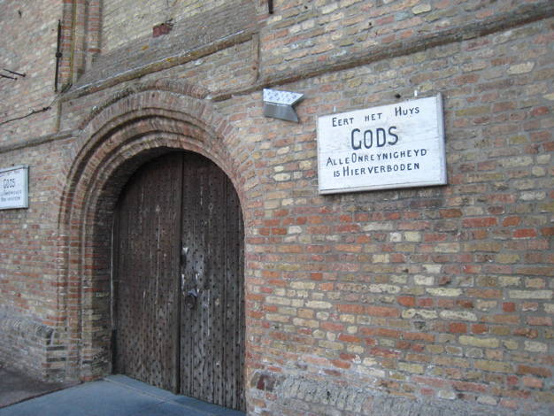
La façade à trois pignons est d'une grande simplicité et le porche pratiquement sans ornement, mais l'ensemble est émouvant... Un avis est placardé, pas en français, mais en flamand, on est dans la Flandre ! "Ceci est la maison de Dieu, toute souillure est interdite ici".
Fête du CVCF 2009 : Grâce à un beau travail de préparation, la Fête a été particulièrement réussie cette année ! Evidemment, l'emplacement est beau et la météo a été bonne, mais ça ne suffit pas... Merci à Damien, Michel et Claude qui ont oeuvré sur place ! Une bonne occasion de rencontrer des cervolistes qu'on ne voit pas forcément beaucoup, plus au sud !